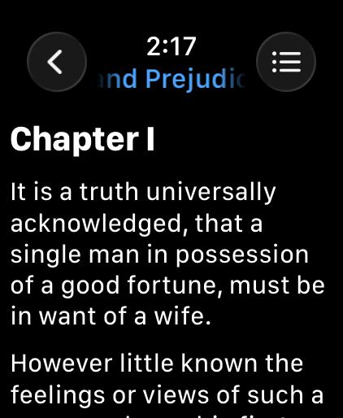
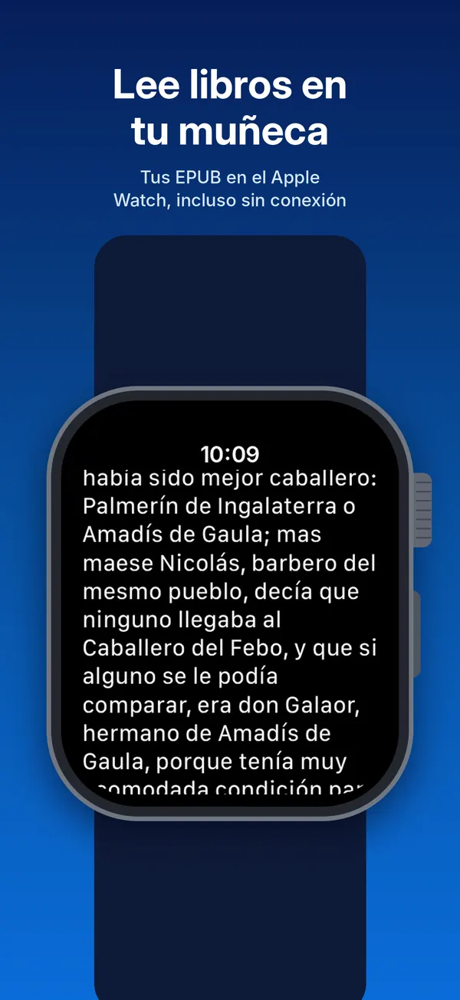
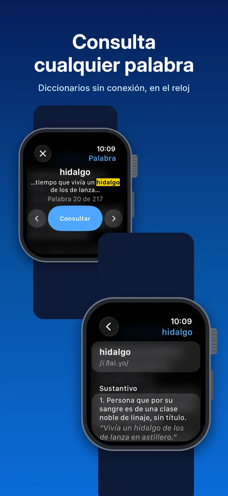
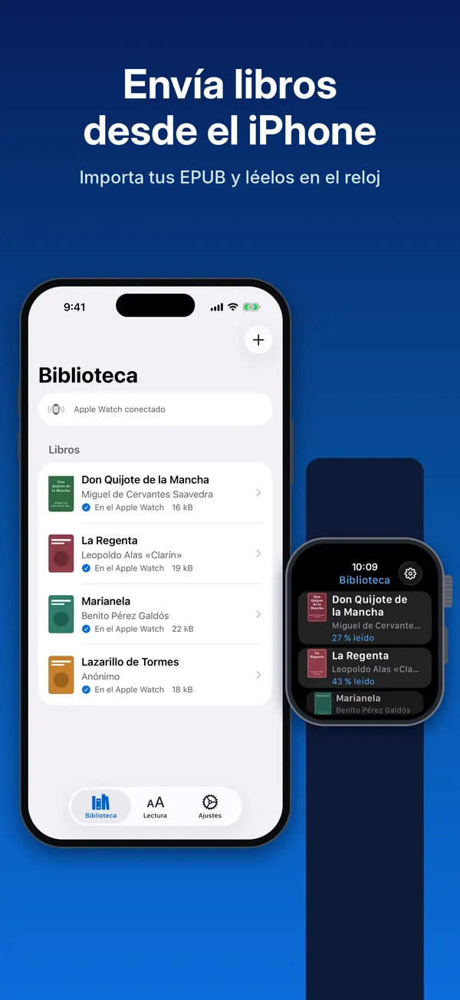
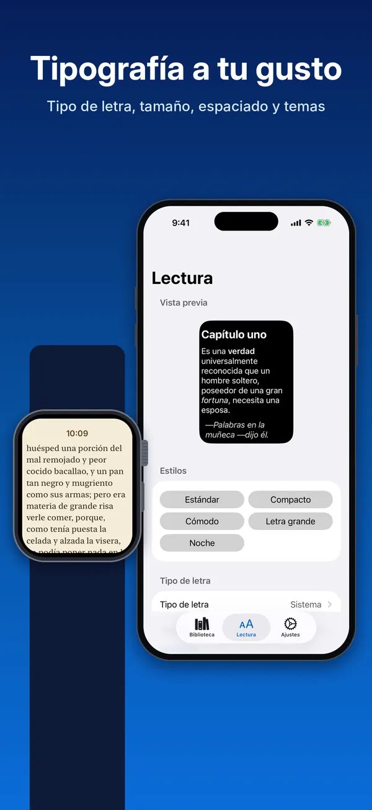
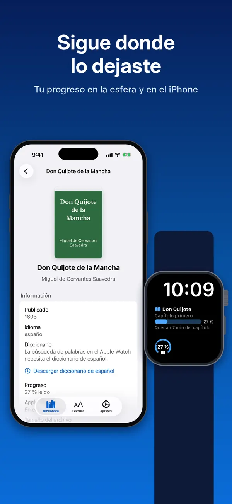

Folito
Un lector de EPUB para Apple Watch. Usa tus propios libros; no hace falta cuenta.
App Store — próximamente

- Gratis, con todas las funciones
- Lectura sin conexión en el reloj
- Sincronización opcional: KOReader Sync, Readest
- VoiceOver y Dynamic Type
Qué hace
Una app de lectura completa, pensada para la pantalla más pequeña que tienes.
Importa y lee sin conexión
Importa tus propios libros
.epuben el iPhone (Archivos, el menú Compartir o el botón de importar). Se envían al reloj, donde los lees sin conexión. Las portadas, las series y las descripciones se leen del propio EPUB.Progreso y complicaciones
El lector estima el tiempo que queda del capítulo y del libro según tu propia velocidad de lectura. Una complicación de la esfera o el Smart Stack muestra tu progreso y te lleva de vuelta a tu página.
Tipografía a tu gusto
Elige la fuente, el tamaño del texto, el interlineado, el espacio entre párrafos y entre letras, los márgenes, el tamaño de los títulos y un tema de lectura, en el reloj o en el iPhone. El texto del libro también puede seguir el tamaño de texto del propio reloj.
Consulta cualquier palabra
Consulta de palabras sin conexión en el reloj con diccionarios gratuitos creados a partir de Wiktionary por reader.dict (CC BY-SA 4.0): inglés, español, francés, alemán, italiano, portugués, japonés y chino, que se descargan en el iPhone. Si no hay diccionario en el reloj para el idioma del libro, Folito te dice cuál falta y dónde conseguirlo.
Sincronización opcional
Opcional: sincroniza tu progreso de lectura con un servidor KOReader Sync o con Readest Cloud, y continúa en KOReader o en las apps de Readest. La sincronización solo avanza: el reloj te propone saltar solo cuando otro dispositivo va más adelante. Está desactivada hasta que inicias sesión con tu propia cuenta; el desarrollador no tiene ningún servidor.
Tu biblioteca de Readest en el iPhone
Con la sesión de Readest iniciada, la Biblioteca del iPhone también muestra los libros de tu biblioteca de Readest. Explóralos, descarga uno al iPhone y al reloj, o sube tus propios libros a Readest.
Datos y portadas de los libros
Solo si lo pides: el iPhone puede completar una portada o una descripción que falte con Open Library, para un libro o para cada libro nuevo que importes. Desactivado por defecto; si no, no se consulta nada.
Para todo el mundo
VoiceOver, Dynamic Type, Texto en negrita, Aumentar contraste y modo oscuro en el iPhone y en el reloj. Los temas de lectura cumplen los ratios de contraste de WCAG.
Privada por diseño
Sin cuentas con el desarrollador, sin anuncios, sin analíticas y sin rastreo. El desarrollador no tiene ningún servidor ni recibe ningún dato.
Capturas de pantalla
Folito en el Apple Watch y el iPhone.





Antes de empezar
¿De dónde saco los libros?
Folito lee archivos EPUB sin DRM. Puedes conseguirlos en bibliotecas de dominio público como Project Gutenberg y Standard Ebooks, en tiendas y editoriales que venden EPUB sin DRM, o usar los archivos que ya tienes.
Los libros comprados con DRM en Kindle, Apple Books o Kobo no se abren.
Para añadir un libro, abre el archivo desde Archivos o el menú Compartir del iPhone y elige Folito, o pulsa Importar EPUB en la biblioteca. Si inicias sesión en Readest, la biblioteca muestra también los libros de tu biblioteca de Readest, listos para descargar. ¿Solo quieres probarla? La app incluye un breve libro de muestra en tu idioma.
Qué necesitas
- Gratis, con todas las funciones: sin compras dentro de la app, anuncios, cuentas ni analíticas.
- Un iPhone con iOS 17 o posterior.
- Un Apple Watch con watchOS 10 o posterior: Apple Watch Series 4 o posterior, incluidos el Apple Watch SE y el Apple Watch Ultra.
Los libros se importan en el iPhone y se envían al reloj enlazado; no hace falta ninguna cuenta.